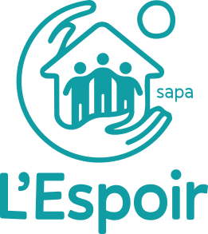

Service d'Accompagnement du Parrainage
Un lien privilégié,
une présence bénévole.
Le SAPA met en relation des enfants qui ont besoin de repères avec des familles bénévoles prêtes à s'engager. Ce lien, qu'on appelle le parrainage, offre au jeune une présence régulière et des expériences qui comptent vraiment.

Le parrainage familial, un engagement simple et profond
Le parrainage familial, c'est simple : un enfant rencontre une famille bénévole, et ils se voient régulièrement dans la durée. La famille bénévole, c'est le parrain ou la marraine.
Ce n'est pas un placement, ni une famille d'accueil. C'est un lien affectif supplémentaire : un week-end par mois, une sortie, des moments du quotidien partagés. Des petites choses qui, pour un enfant qui manque de repères, peuvent vraiment changer la donne.

Le SAPA s'adresse à deux types de familles
Vous cherchez un parrain pour votre enfant
Vous êtes une famille suivie par un service social ou le SPJ et vous souhaitez que votre enfant ait une présence bénévole dans sa vie ? Le SAPA peut vous aider à trouver la famille marraine qui correspond.
- Enfant ou jeune de 6 à 18 ans
- Sur orientation d'un service social ou du SPJ
- Votre accord et celui de votre enfant sont indispensables
- Zone Huy, Waremme ou Hannut
Vous souhaitez devenir parrain ou marraine
Vous avez envie de vous engager et d'apporter quelque chose à un jeune qui en a besoin ? Le parrainage bénévole est une aventure humaine comme peu d'autres. Pas besoin d'être parent ou spécialiste, juste de la disponibilité et du cœur.
- Toute configuration familiale bienvenue
- Environ 2 à 4 heures par mois minimum
- Formation et accompagnement SAPA fournis
- Casier judiciaire demandé (modèle 2)
Le chemin pour devenir parrain ou marraine
On vous accompagne de bout en bout, du premier coup de téléphone jusqu'au moment où vous rencontrez votre filleul.
Appelez-nous ou envoyez un mail pour vous manifester. On organise un premier échange informel pour répondre à vos questions.
Un travailleur du SAPA vous rencontre chez vous ou dans nos locaux pour mieux vous connaître et voir si votre profil correspond aux jeunes qu'on accompagne.
Avant de rencontrer votre filleul, vous suivez une courte formation pour vous préparer à ce que vous allez vivre et comprendre la réalité des jeunes qu'on accompagne.
Une fois le parrainage lancé, on reste là. On fait le point régulièrement avec vous et on est disponibles si quelque chose se complique en cours de route.
Zone d'intervention
Le SAPA couvre actuellement trois arrondissements de la province de Liège :
Intéressé(e) ?
Que vous souhaitiez devenir bénévole ou demander un parrainage pour votre enfant, contactez-nous.
send Nous écrireUn engagement qui change deux vies
Pour le jeune
Un adulte de confiance en plus, des sorties, des découvertes. Le parrainage donne au filleul des repères positifs et une ouverture sur un monde qu'il n'aurait pas forcément rencontré autrement.
Pour la famille
Un regard extérieur, un temps de répit pour les parents, et parfois un vrai coup de pouce. Quand le filleul revient d'un week-end chez son parrain, ça détend souvent la maison entière.
Pour le bénévole
Tous les parrains et marraines vous le diront : ils reçoivent au moins autant qu'ils donnent. C'est une relation vraie, qui dure dans le temps et qui marque.
Ce qu'on nous demande souvent sur le SAPA
Les questions qui reviennent le plus souvent de la part des familles candidates au parrainage et des intervenants de l'aide à la jeunesse.
Qu'est-ce que le parrainage familial ?expand_more
Qui peut devenir famille de parrainage ?expand_more
Comment se passe la sélection des familles bénévoles ?expand_more
À quelle fréquence accueille-t-on le jeune ?expand_more
Est-ce qu'on est rémunéré pour parrainer ?expand_more
Comment se met en place la mise en relation avec un jeune ?expand_more
Une autre question ?
mail Nous contacterEnsemble, on continue.
Chaque contribution, petite ou grande, ponctuelle ou régulière, nous permet d'aller un peu plus loin avec les jeunes qu'on accompagne. Merci, vraiment.